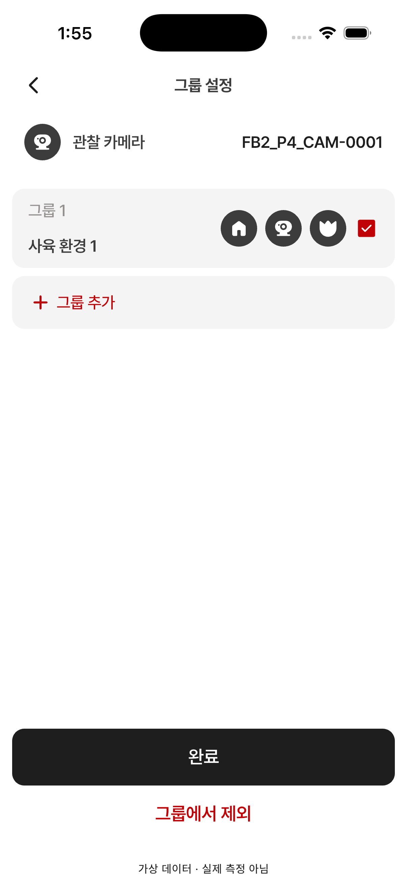

15 · 기기의 그룹 설정
14번 승인 완료 · 다음 화면 검수 대기
기기 정보, 그룹 카드·구성원 아이콘·체크박스, 그룹 추가, 하단 완료/그룹에서 제외를 확인합니다.
앱은 해당 그룹에 등록된 종류의 아이콘을 진하게 표시합니다. QA에는 사육장·카메라·개체가 모두 있어 세 아이콘이 진합니다. 원본은 카메라만 진하게 표시된 예시입니다.
Figma · 393×852 15 · 시뮬레이터 · 402×874
15 · 시뮬레이터 · 402×874
재검수: 기본 간격·폰트 크기는 맞지만 그룹 추가 굵기/줄높이, 제목·완료 글자색, 제외 버튼 터치 너비 차이가 있습니다. 다음 화면 이동 보류.
상세 측정 결과 · 검수 범위와 상태 차이